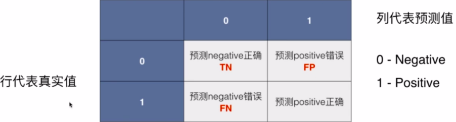
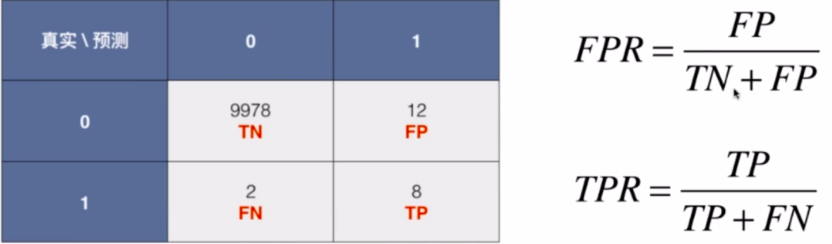

在二分类问题中，正负样本不均衡时，使用ROC比准确率更佳。
准确度的陷阱
一个癌症预测系统，预测的准确度达到了99.9%，如果癌症的发病率仅为0.1%，那么根本不需要任何机器学习算法，只要系统预测所有人都是健康，该系统的准确度就达到了99.9%。
那么，真正患病的人就会被误诊，糟了。。。
这种情况是属于数据样本极度偏斜，对于这种数据，只是用分类准确度是远远不够的，所以需要引入新的分类指标。
二分类问题的混淆矩阵

混淆矩阵中，第一个字母代表是否预测对了，第二个字母代表预测的是什么。
- TP：预测对了，并且预测的是positive(1)
- TN：预测对了，并且预测的是negtive(0)
- FP：预测错了，并且预测的是positive(1)
- FN：预测错了，并且预测的是negtive(0)
通过混淆矩阵，可以构造许多新的指标，往下看…
精准率
- 含义：预测数据为positive(1)，并且预测对了的概率
- 计算公式：precision=TP/(TP+FP)
召回率
- 含义：我们关注的事件(positive(1))真实发生了，真实发生的这些事件中我们成功的预测对了多少
- 计算公式：recall=TP/(TP+FN)
F1 Score(兼顾精准率和召回率)
- 含义：F1 Score 是precision和recall的调和平均值
- 计算公式：F1=(2.precision.recall)/(precision+recall)
精准率和召回率两者是互相矛盾的，此升彼消。
这一点可以通过绘制精准率和召回率分别与阈值之间的图形来直观看出。sklearn中的代码如下,其中的decision_function()就是WX=threshold（这里以LR为栗）1
2
3
4
5
6
7
8
9
10
11precision=[]
recalls=[]
thresholds=np.arrange(np.min(decision_scores),np.max(decision_scores),0.1)#0.1是步长
for threshold in thresholds:
y_predict=np.array(decision_score>=threshold,dtype='int)
precision.append(precision_score(y_test,y_predict))
recalls.append(recalls_score(y_test,y_predict))
plt.plot(thresholds,precisions)
plt.plot(thresholds,recalls)
plt.show()
PR(Precision-Recall)曲线
1 | plt.plot(precisions,recalls) |
精准率和召回率此消彼长的趋势很明显了
ROC曲线
坐标轴分别是FPR和TPR
- TPR(True Positive Rate)：预测为positive(1)，并且预测对了的数量占所有真实值为positive(1)的样本的比率
- FPR(False Positive Rate)：预测为positive(1)，但是预测错了的数量占真实值为negtive(0)样本的比率

两者也是此消彼长的关系
常用于不均衡数据，可用来比较各个模型的预测能力。